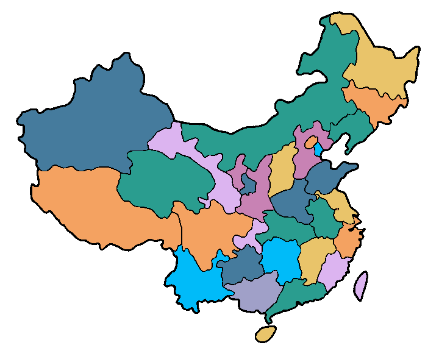
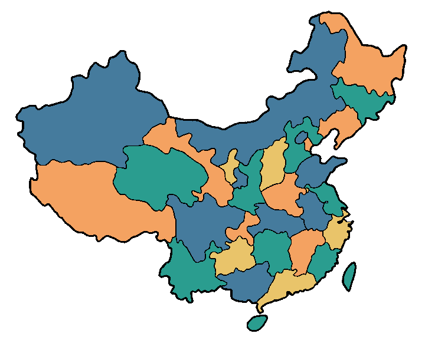

Overview & Key Contributions
We propose a novel cell instance segmentation method inspired by the four-color theorem. By conceptualizing cells as countries and tissues as oceans, we introduce a four-color encoding scheme that ensures adjacent instances receive distinct labels. This reformulation transforms instance segmentation into a constrained semantic segmentation problem with only four predicted classes, substantially simplifying the instance differentiation process.


Method
Asymptotic Training: Separate foreground segmentation before four-color labeling.
Encoding Transformation: Learnable module to achieve minimal-color consistency.
Negative Sampling: Orthogonality constraints enforce distinct adjacent labels.
Results
- DSB2018: DICE = 0.939, PQ = 0.770
- PanNuke: DICE = 0.816, PQ = 0.610
- BBBC006v1: DICE = 0.954, PQ = 0.935
Code
Implementation and pretrained models are available on GitHub.